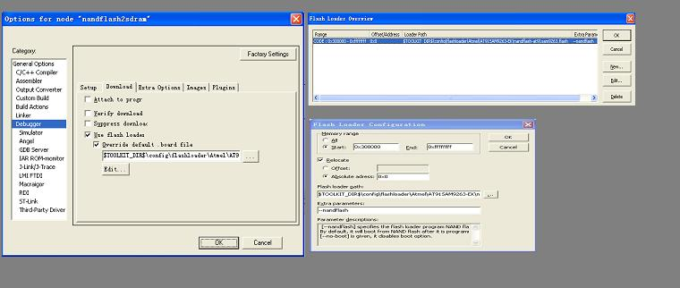

Flash loader usage with AT91 devices
The flash loaders provided with AT91 devices software examples allow to program internal flash memories, as well as external flash memories such as Nandflash, Dataflash, Serialflash, Norflash or TWI EEPROM.
This page explains how to fill the EWARM "Download window" to allow the user to write his program into a selected memory.
The figure below shows the three EWARM windows involved in Flashloader configuration :

Extra parameters list
Use this text box to specify the memory to be programed and to set the selected flashloader options.
| Extra parameters | Description |
|---|---|
| --flash | Program the embedded flash. |
| --dataflash | Program AT45DB/DCB DataFlash®. |
| --serialflash | Program AT25/AT26 serial flash. |
| --nandflash | Program NAND flash. |
| --norflash | Program CFI compatible Nor flash. |
| --eeprom | Program 2-Wire Bus Serial EEPROM. |
Internal flash bank
Use this option with --flash extra parameter to indicate on which eefc bank.
| --eefcbank {0/1} | EEFC bank select. Set 0 for EEFC bank 0, set 1 for EEFC bank 1. This option only support for the chip which have two EEFC controller. |
Dataflash and Serialflash Chip Select
Use this option with --dataflash or --serialflash extra parameter to indicate on which CS pin the flash is connected.
| --cs {0/1} | SPI CS pin select. Set 0 for CS0, set 1 for CS1. |
AT24 EEPROM device type selection
Use this option with --eeprom extra parameter.
| --at24id {0-10} | 2-Wire Bus Serial EEPROM device type. |
| ID | EEPROM type |
|---|---|
| 0 | AT24C01 |
| 1 | AT24C02 |
| 2 | AT24C04 |
| 3 | AT24C08 |
| 4 | AT24C16 |
| 5 | AT24C32 |
| 6 | AT24C64 |
| 7 | AT24C128 |
| 8 | AT24C256 |
| 9 | AT24C512 |
| 10 | AT24C1024 |
Boot option
Use this option to specify if you want the downloaded program to be bootable (Only for AT91SAM9 devices with external memory boot feature).
To be used with dataflash, serialflash, nandflash or eeprom flashloaders.
| --boot | Optional boot file support. When --boot is given, the flash loader replaces the sixth word of the binary file with the size of the program to download. This allows the program to be executed by the ROM code at boot time. By default, Nand flash,Dataflash,Serialflash and Eeprom have the --boot option. |
| --no-boot | Disable boot file support. When --no-boot is given, the flash loader disables boot option. |
Example
This small example shows how to use the Nandflash flash loader for bootstrap and getting started projects on a AT91SAM9263-EK board.
This will result in two programs in Nandflash ready to be executed automatically when the board in powered on.
at91bootstrap project :
Open at91bootstrap-at91sam9263-ek EWARM workspace.
Select nandflash2sdram configuration.
Choose Project->Options.
Choose the Debugger category and click the Setup tab.
Select the J-Link/J-Trace option in driver box.
Choose the J-Link/J-Trace category and configure it.
Choose the Debugger category and click the Download tab.
Select the Use Flash loader(s) option.
Use the button labeled '..' to select at91sam9263-nandflashboot.board.
If no such file is available, you can create a new file
Select Project->Download and Debug to program.
The figure below shows the Flash Loader Configuration dialog box for the bootstrap project.

Getting Started project :
Open getting-started-project workspace.
Choose Project->Options.
Choose the Debugger category and click the Setup tab.
Select the J-Link/J-Trace option in driver box.
Choose the J-Link/J-Trace category and configure it.
Choose the Debugger category and click the Download tab.
Select the Use Flash loader(s) option.
Use the button labeled '..' to select at91sam9263-nandflash.board.
If no such file is available, you can create a new file
Select Project->Download and Debug to program.
Start a new power up sequence to reset the board
The figure below shows the Flash Loader Configuration dialog box for the getting started project You can see that the no-boot option is set to disable boot.